ピョンちゃん コレクション
Old but Gold. 薬局の店頭を彩ったマスコットたち。
English version is under construction. Please stay tuned!
アンプルピョンちゃん
フィギュア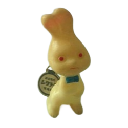
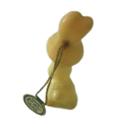
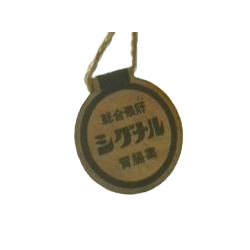
3代目（1963-1967）のピョンちゃん。
約5cm。手にアンプルを持っている様子です。
総合強肝シグナル胃腸薬、と書いてあります。 たまに新シグナル内服液にお世話になっているのですが、 随分古くからあるお薬のようで驚きました。 昔はアンプルに入っていたのですね。
約5cm。手にアンプルを持っている様子です。
総合強肝シグナル胃腸薬、と書いてあります。 たまに新シグナル内服液にお世話になっているのですが、 随分古くからあるお薬のようで驚きました。 昔はアンプルに入っていたのですね。
入手：？
アンプルピョンちゃん
フィギュア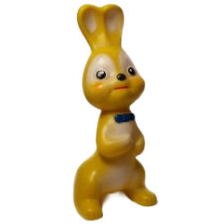
アンプルピョンちゃんその2。
3代目（1963-1967）のピョンちゃんの別バージョン。
3代目（1963-1967）のピョンちゃんの別バージョン。
入手：？
シェイクハンドピョンちゃん
フィギュア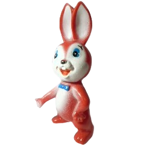
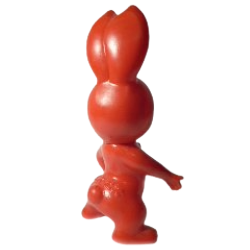
4代目（1967-1972）のピョンちゃん。
シェイクハンドピョンちゃんとも呼ばれています。
握手しているように見えます。約13㎝
「エスエス」の文字。顔と体はスプレーで描かれているようです。
シェイクハンドピョンちゃんとも呼ばれています。
握手しているように見えます。約13㎝
「エスエス」の文字。顔と体はスプレーで描かれているようです。
入手：2006年
ラブ&ピースピョンちゃん
フィギュア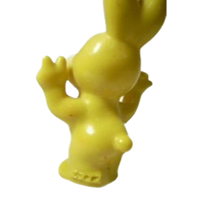
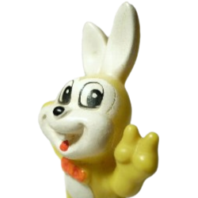
5代目（1972-1975）のピョンちゃん。
ラブ&ピースピョンちゃんとも呼ばれています。
当時（昭和47年頃）流行したラブ& ピース、もしくはVサインの 格好だそうです。他にも色違いがあります。
ラブ&ピースピョンちゃんとも呼ばれています。
当時（昭和47年頃）流行したラブ& ピース、もしくはVサインの 格好だそうです。他にも色違いがあります。
入手：2006年
切り株ピョンちゃん
フィギュア
6代目（1975-1979）のピョンちゃん。
切り株（躍進）ピョンちゃんとも呼ばれています。骨董市で購入しました。
後ろはこんな感じです。切り株に「エスエス」この赤いピョンちゃんの他、黄色やピンクのもの、 ポーズが違うものなど、いろいろあります。 私自身がなつかしく感じるのは、このピョンちゃんあたりから（笑） 個人的には一番かわいいと思います。（みんなかわいいけどね） 一番なじみがあります。 ピョンちゃんは時代による顔の変化が豊富なので、人によっていろんな思い入れがあることでしょう。
切り株（躍進）ピョンちゃんとも呼ばれています。骨董市で購入しました。
後ろはこんな感じです。切り株に「エスエス」この赤いピョンちゃんの他、黄色やピンクのもの、 ポーズが違うものなど、いろいろあります。 私自身がなつかしく感じるのは、このピョンちゃんあたりから（笑） 個人的には一番かわいいと思います。（みんなかわいいけどね） 一番なじみがあります。 ピョンちゃんは時代による顔の変化が豊富なので、人によっていろんな思い入れがあることでしょう。
入手：2005年
12ヶ月ピョンちゃん
フィギュア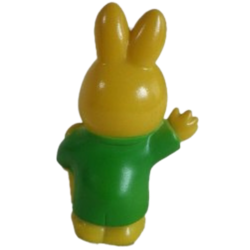
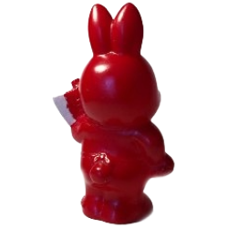
7代目（1979-1995）のピョンちゃん。
5月（金太郎）と6月（レインコート）
名古屋の大須商店街にあるお店で買いました。全12種類あります。
5月（金太郎）と6月（レインコート）
名古屋の大須商店街にあるお店で買いました。全12種類あります。
入手：2006年
ピョンちゃん指人形・キーホルダー
指人形・キーホルダー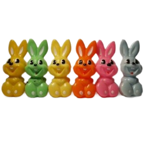
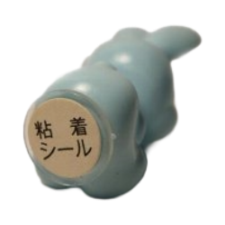
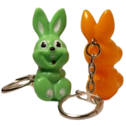
ピョンちゃんの指人形とキーホルダー。
景品で配られていたんじゃないかな？と推測します。
この指人形は骨董市で入手しました。 この5色のほかにブルーもあるのですが、手に入りませんでした。
やっと、ブルーのピョンちゃんを発見しました。（2009年3月）
6色でコンプリート？
いつ頃配られていたのでしょうか？ご存知の方がいらっしゃいましたら 教えてください。
景品で配られていたんじゃないかな？と推測します。
この指人形は骨董市で入手しました。 この5色のほかにブルーもあるのですが、手に入りませんでした。
やっと、ブルーのピョンちゃんを発見しました。（2009年3月）
6色でコンプリート？
いつ頃配られていたのでしょうか？ご存知の方がいらっしゃいましたら 教えてください。
入手：2009年